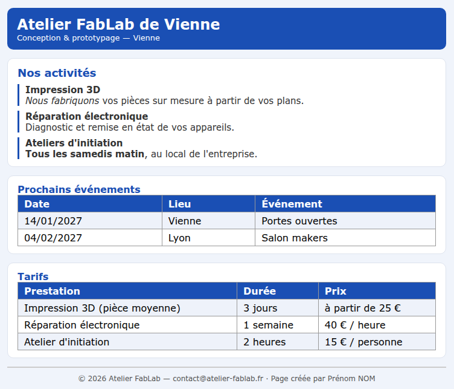

Un client vous contacte : il veut un site vitrine pour présenter son activité. Vous êtes le prestataire web : à vous de livrer une page qui respecte son cahier des charges.
« Bonjour, je suis Mme Reyes, gérante de l'Atelier FabLab à Vienne. Nous imprimons des pièces en 3D, nous réparons de l'électronique et nous organisons des ateliers d'initiation. J'ai besoin d'une page web simple et claire que je puisse montrer à mes clients : notre présentation, nos trois activités, nos prochains événements sous forme de tableau, et nos tarifs dans un second tableau. Je veux que la page fasse « sérieux » : couleurs sobres, textes lisibles, et mon nom en bas de page. Merci ! »
<header> (bandeau bleu) avec un
<h1> (nom de l'entreprise) ;
<section> : « Nos activités », « Prochains événements »,
« Tarifs » ;<article> (une par activité) avec
<h2> (ou <h3>) + <p> ;
<table> complets (tr,
th, td) : événements (2 lignes min.) et tarifs (3 lignes
min.) ;
<footer> (entreprise, contact) ;<strong>, un <em> et un
<b> bien utilisés.

| Effet sur le rendu de référence | Propriété(s) attendue(s) |
|---|---|
| Fond de page bleu très clair, texte gris foncé, police sans-serif | background-color · color ·
font-family sur body
|
| Bandeau d'en-tête bleu foncé avec texte blanc : le client reconnaît « sa » couleur | background-color + color sur header |
| Sections en « cartes » blanches arrondies, détachées du fond | background-color sur section ·
border-radius (à découvrir) · margin + padding
|
| Deux tableaux lisibles : bordures fines, en-têtes bleus | border + border-collapse: collapse · padding ·
th stylé
|
| Titres colorés et hiérarchisés : la page se survole | color + font-size sur h1, h2,
h3
|
| Pied de page discret (plus petit, grisé, séparé par un trait) | font-size · color · border-top sur
footer
|
Autorisés : le cours, les mémos (balises + CSS), le site de documentation.
Interdit : les IA, les copier-coller de code d'un camarade (comparez les deux fichiers, ça se voit). Le client vous regarde travailler : les textes doivent être rédigés par vous, pas copiés d'internet — un prestataire qui copie un site concurrent, c'est un procès.
Sur Pronote : page.html + style.css (ou une archive des deux
fichiers). Livraison = envoi de la facture : retard pénalisant !